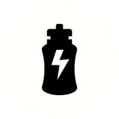
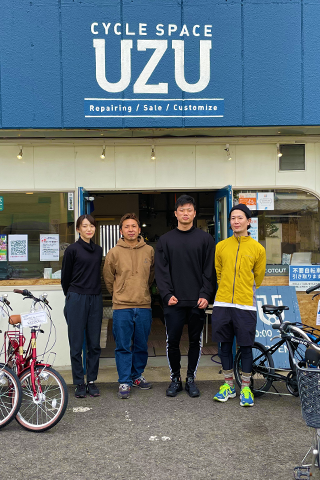
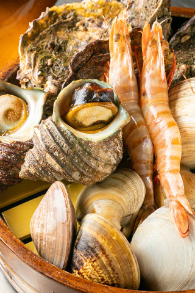
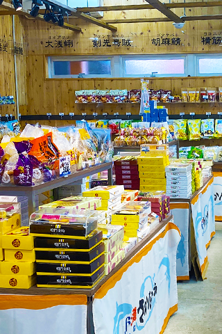

HOWTO
鳴門市について
徳島県鳴門市は関西の玄関の窓口であり、うずしおや大塚国際美術館などの観光スポットがたくさんあるので、サイクリストの聖地として十分なポテンシャルを有しています。自転車で散策して、コース周辺のおすすめグルメスポットで美味しい食事を楽しんでもらい、鳴門の魅力ある四季折々の美しい自然・街並みを五感で感じ、その土地の暮らしや文化に触れてもらいたいと考えています。
海と愛車の自転車を見ながら地元の食材に舌鼓を打ってみませんか？
服装
走行中の安全確保、疲労や日焼け軽減などのため、以下の服装が望ましいです。
2022年より、自転車利用者に対してヘルメットの着用が努力義務化されました。
安全運転を心がけるのはもちろん、もしもの備えとしてヘルメットを正しく着用し、自分の命を守りましょう。
-
自転車用
ヘルメット -
サングラス
-
通気性のいい
ウェア上下 -
グローブ
携行品
-
バッグ
-
ライト
-
ロック
-
地図
-
救急用品
-

コンパクトツール
修理キット -

水分
-
携行食
走行の注意
サイクリングにあたり、交通ルールを守って安全運転を心掛けましょう。
・自転車は必ず車道の左側を通行しましょう。
・グループで走行する場合は、十分な車間距離をとりながら、周囲に注意して走行してください。信号無視や並走、話しながらの走行、競争など、危険な走行はしないでください。もちろん飲酒運転や二人乗りなどの危険運転は禁止です。
・市街地を走行する場合は、特に車両への注意と、歩行者の妨げにならない走行をお願いします。
・山あいのコースでは、アップダウンが大きい箇所もありますので、スピードの出し過ぎには十分注意してください。また、猪などの野生動物に出会う場合もあります。
・夜間は視界が悪く、事故や道に迷う等のトラブルが起きやすくなりますので、できるだけ日中のサイクリングを計画しましょう。
もっと鳴門について知るには
-

01
01|インタビュー
カードの説明が入ります。テキストテキストテキストテキストテキストテキストテキストテキストテキストテキストテキストテキストテキストテキストテキストテキスト -

02
02|食べる
カードの説明が入ります。テキストテキストテキストテキストテキストテキストテキストテキストテキストテキストテキストテキストテキストテキストテキストテキスト -

03
03|買う
カードの説明が入ります。テキストテキストテキストテキストテキストテキストテキストテキストテキストテキストテキストテキストテキストテキストテキストテキスト -

04
04|楽しむ
カードの説明が入ります。テキストテキストテキストテキストテキストテキストテキストテキストテキストテキストテキストテキストテキストテキストテキストテキスト -

05
05|サイクルスポット
カードの説明が入ります。テキストテキストテキストテキストテキストテキストテキストテキストテキストテキストテキストテキストテキストテキストテキストテキスト -
06
06|Q&A
カードの説明が入ります。テキストテキストテキストテキストテキストテキストテキストテキストテキストテキストテキストテキストテキストテキストテキストテキスト